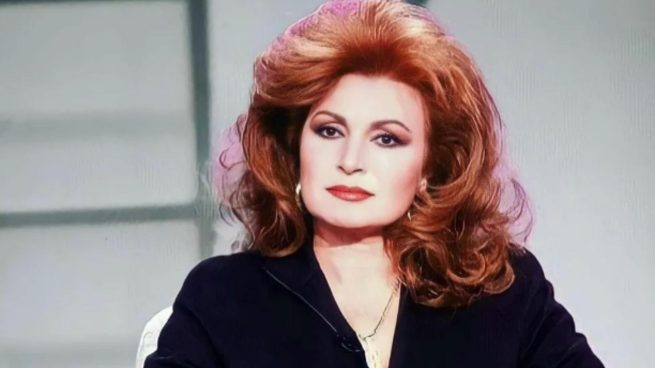

La periodista que preguntó a Rocío Jurado por su talla de sujetador desvela la desconocida verdad de aquella entrevista
La contundente respuesta que la cantante dio a Lourdes Lancho hace más de tres décadas pasó a la historia, pero ahora la presentadora ha revelado un dato desconocido
La entrega de Lazos de Sangre dedicada a Rocío Jurado que TVE ha emitido este jueves ha desvelado una verdad hasta ahora desconocida sobre una de las entrevistas más recordadas de la artista. Y es que, entre los testimonios con los que ha contado el programa ha estado el de Lourdes Lancho, la periodista que hace tres décadas le preguntó a la cantante qué talla de sujetador usaba, dando lugar a una contundente respuesta por parte de ‘la más grande’. “¿Me puede decir su talla de sujetador?”, le preguntó la entonces presentadora de Un paseo por el tiempo. “El único sujetador que me importa es el mental, que es el que tú te tenías que poner para no hacerme esa pregunta”, espetó Rocío, provocando risas en plató. Te puede interesar: Montealto, de hogar de Rocío Jurado a casa en ruinas: así luce la mansión de La Moraleja que ya tiene nuevo dueño Ahora, la periodista ha desvelado cómo se gestó aquella pregunta y, según su relato, el contundente ‘zasca’ de la Jurado no fue fruto de la casualidad. “El programa tenía una pequeña sección que era un cuestionario rápido, cómico, ingenioso, un poco rompedor. Es ahí donde le hice la famosa pregunta a Rocío Jurado”, explica Lancho. “En su momento, ya me pareció un poco tonta la pregunta”, confiesa la periodista, pero recuerda que hubo una época en que los pechos de la intérprete de Como una ola eran prácticamente “una cuestión de estado”. Según cuenta ahora Lourdes, antes de la entrevista fue junto a Julia Otero hasta el camerino de Rocío Jurado para entregarle el cuestionario al que se tendría que someter “y que pudiera preparar una buena respuesta”. “Fue Julia la que le invitó a que diera una respuesta contundente, que ahora diríamos que fue un zasca”, asegura. De esta manera, casi tres décadas después de aquella entrevista se desvela que la cantante ya sabía que le iban a hacer la pregunta sobre su talla de sostén, algo que ha confirmado su hija, Rocío Carrasco, en el plató del programa: “La pregunta la sabría, pero la respuesta era suya y nadie se la dijo”. Además, Lourdes Lancho ha lamentado que esa pregunta la haya perseguido desde entonces. “Tenía 20 y pocos años, el cuestionario me lo daban hecho, se lo pasé en el camerino, ella planeó la respuesta y quedó como una diva, que es lo que era”, comenta, negando que para ella se trate de una pregunta machista. “Es una pregunta estúpida. ¿Machista? No. ¿Estúpida? Sí”, ha zanjado.